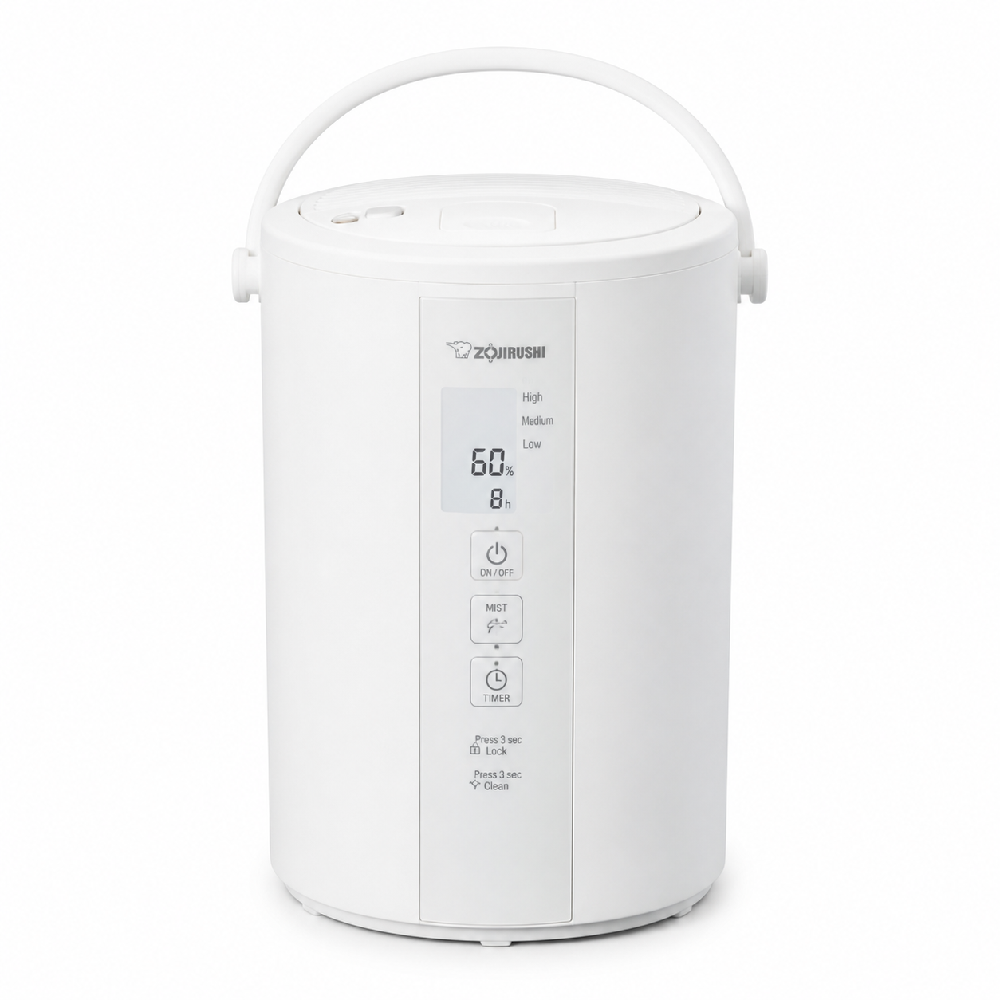
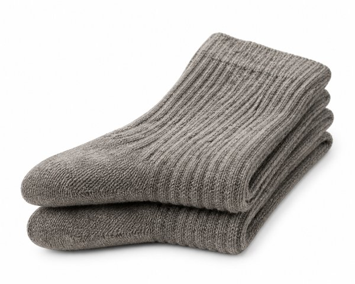
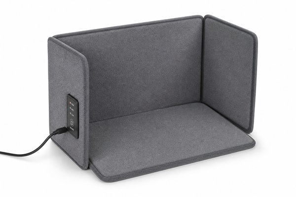
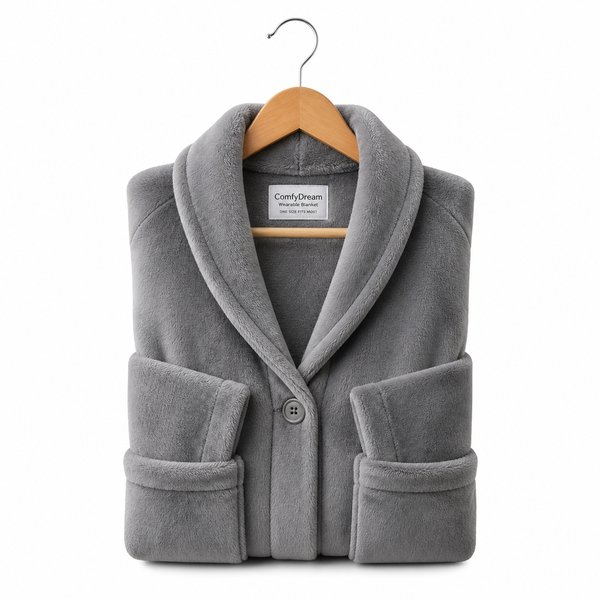
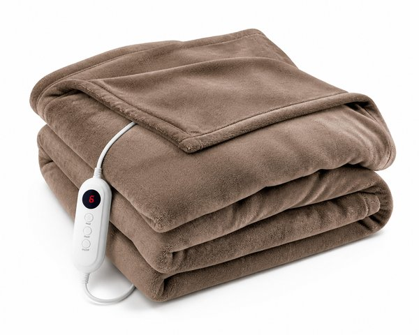
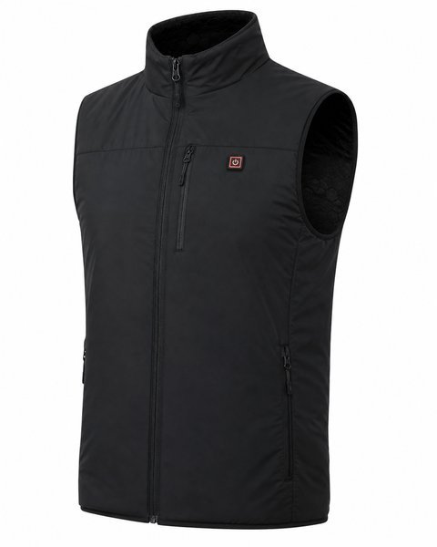
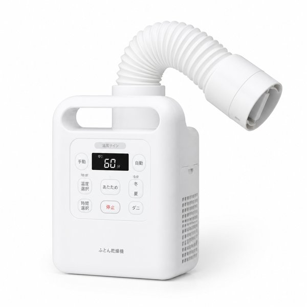
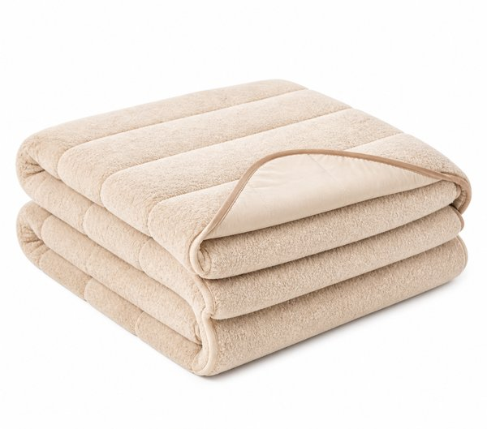
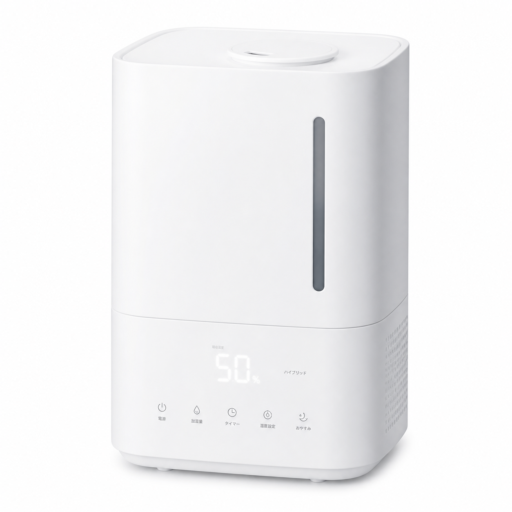
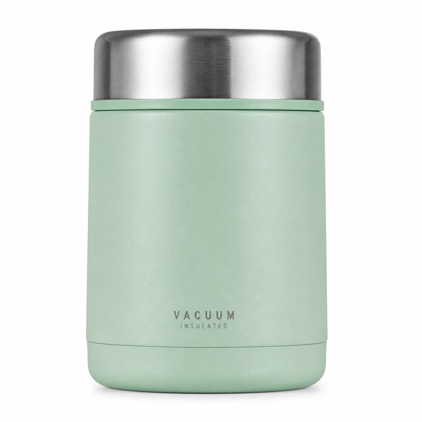

【2026年最新】冬の寒さ・乾燥対策に！生活の質（QOL）が爆上がりする防寒＆温活グッズおすすめ10選
冬本番になると、朝の冷え込みや足元の寒さ、空気の乾燥で体調を崩しやすくなりますよね。
エアコンを強くすると電気代が高騰するだけでなく、喉や肌がカサカサになってしまうのが大きな悩みです。
そこで本記事では、光熱費を賢く抑えつつ、自宅やオフィスで体の芯からポカポカ温まる「冬の快適度を激変させるおすすめ防寒＆温活グッズ10選」を厳選してご紹介します。
- 一目でわかる！おすすめ10選の比較表
- BEST 1：スチーム式加湿器 EE-DD50 4.0L 大容量
- BEST 2：まるでこたつソックス 温熱刺激特許技術
- BEST 3：デスクパネルヒーター 3つ折り 足元遠赤外線ヒーター
- BEST 4：着る毛布 グルーニー (Groony) 静電気防止加工
- BEST 5：洗える電気敷毛布 フランネル仕立て 140×80cm
- BEST 6：前後17箇所発熱 電熱ヒーターベスト バッテリー対応
- BEST 7：マルチふとんドライヤー 布団乾燥機 コンパクト
- BEST 8：Nウォーム 吸湿発熱 敷きパッド シングル
- BEST 9：プラズマクラスター 加湿空気清浄機 KC-S50
- BEST 10：真空断熱スープジャー 400ml 保温ランチジャー
- まとめ：生活をラクにする最初の一歩
| 順位 | 商品名 | ブランド | 最大の特徴・おすすめ理由 | 総合評価 |
|---|---|---|---|---|
| 01 | スチーム式加湿器 EE-DD50 4.0L 大容量 | 象印（ZOJIRUSHI） | フィルター掃除が不要でカビや雑菌の繁殖リスクが極小 | ★★★★★ 4.9 |
| 02 | まるでこたつソックス 温熱刺激特許技術 | 靴下サプリ（岡本） | 独自の編み分け技術で足首から足先まで持続的なぬくもり | ★★★★★ 4.8 |
| 03 | デスクパネルヒーター 3つ折り 足元遠赤外線ヒーター | アイリスオーヤマ | 1時間あたり約4.3円と圧倒的な省エネで電気代を気にせず使える | ★★★★☆ 4.8 |
| 04 | 着る毛布 グルーニー (Groony) 静電気防止加工 | LOWYA（ロウヤ） | とろけるような肌触りで全身が包まれる幸福感 | ★★★★☆ 4.7 |
| 05 | 洗える電気敷毛布 フランネル仕立て 140×80cm | 山善（YAMAZEN） | 電気代は1晩（8時間）使ってもわずか数円レベルの節約優等生 | ★★★★☆ 4.8 |
| 06 | 前後17箇所発熱 電熱ヒーターベスト バッテリー対応 | EXCITECH | 3段階の温度調節が可能で室内外の気温差に柔軟に対応 | ★★★★☆ 4.7 |
| 07 | マルチふとんドライヤー 布団乾燥機 コンパクト | BRUNO（ブルーノ） | わずか1.4kgの超軽量＆ハンドル付きでお部屋の移動がラク | ★★★★★ 4.8 |
| 08 | Nウォーム 吸湿発熱 敷きパッド シングル | ニトリ（NITORI） | 触れた瞬間から暖かいなめらかなマイクロフリース肌触り | ★★★★☆ 4.7 |
| 09 | プラズマクラスター 加湿空気清浄機 KC-S50 | SHARP（シャープ） | 独自のプラズマクラスター7000で静電気を抑え浮遊菌を除去 | ★★★★☆ 4.8 |
| 10 | 真空断熱スープジャー 400ml 保温ランチジャー | THERMOS（サーモス） | 高い保温力で具材を入れるだけでお昼までに味が染み込む保温調理 | ★★★★★ 4.8 |

スチーム式加湿器 EE-DD50 4.0L 大容量
湯沸かしポットと同じ構造でお湯を沸かして蒸気を出す究極の加湿器。フィルターが一切なく、フッ素加工の内釜をクエン酸洗浄するだけで清潔さを保てます。加湿スピードも群を抜いています。
- フィルター掃除が不要でカビや雑菌の繁殖リスクが極小
- 沸騰した清潔な蒸気で部屋の体感温度までアップ
- チャイルドロックや転倒湯漏れ防止など安全設計が万全
- 沸騰時にコトコトと湯沸かし音がする

まるでこたつソックス 温熱刺激特許技術
足首のツボ「三陰交」を独自の温熱刺激で温め、履いた瞬間から足先までポカポカになる大ヒット靴下。フローリングの底冷えに悩む女性やデスクワーカーから絶大な支持を集めています。
- 独自の編み分け技術で足首から足先まで持続的なぬくもり
- ふんわり柔らかな肌触りでリラックスタイムに最高
- 部屋履き用としてプレゼントにも喜ばれる大人気アイテム
- 生地が分厚いため外出用のタイトな靴には入らない

デスクパネルヒーター 3つ折り 足元遠赤外線ヒーター
デスクワーク中の冷え固まる足元を3方向から遠赤外線で包み込む折りたたみパネルヒーター。ブランケットを上から掛ければまるで「一人用こたつ」の暖かさが手に入ります。
- 1時間あたり約4.3円と圧倒的な省エネで電気代を気にせず使える
- 風が出ないため空気が乾燥せずホコリも巻き上げない
- 薄型軽量でオフシーズンはわずかな隙間に収納可能
- 足の甲まで覆うには上から膝掛けの併用がおすすめ

着る毛布 グルーニー (Groony) 静電気防止加工
極上のマイクロファイバーで仕立てられた、着たまま動けるロング丈毛布。腕まくりできる袖口ゴムやはだけにくいボタン設計で、部屋着の上から羽織るだけで暖房を消せるレベルの暖かさです。
- とろけるような肌触りで全身が包まれる幸福感
- 着たまま歩けるため朝の家事やPC作業もスムーズ
- 静電気防止加工済みでパチパチしにくく洗濯機で丸洗い可能
- 丈が長いため階段の昇降時は裾を持ち上げる必要がある

洗える電気敷毛布 フランネル仕立て 140×80cm
肌触り抜群のなめらかフランネル素材を採用した電気毛布。就寝前に布団の中に敷いておけば、真冬の冷え切ったベッドが一瞬で極楽の温もりに変わり、寝つきの良さが段違いです。
- 電気代は1晩（8時間）使ってもわずか数円レベルの節約優等生
- コントローラーを外せば洗濯機で丸洗いできて常に清潔
- ダニ退治機能付きでアレルギー対策にも配慮
- 低温やけど防止のため就寝中は「弱」設定が推奨

前後17箇所発熱 電熱ヒーターベスト バッテリー対応
首・背中・お腹など前後17箇所にグラフェンヒーターを内蔵した本格防寒ベスト。スイッチを入れて約10秒で発熱し、真冬の屋外通勤、自転車、早朝の散歩を劇的に快適にします。
- 3段階の温度調節が可能で室内外の気温差に柔軟に対応
- モバイルバッテリー給電式で手持ちのバッテリーが使える
- 軽量スリムでジャケットやコートの下にスマートに着込める
- 長時間の連続使用には大容量バッテリー（10000mAh以上）が必要

マルチふとんドライヤー 布団乾燥機 コンパクト
マットを広げる手間がなく、伸縮ノズルを布団に差し込むだけで温風が隅々まで行き渡る布団乾燥機。寝る前の「あたためモード」を使えば、まるで天日干し直後のふっくらベッドで眠れます。
- わずか1.4kgの超軽量＆ハンドル付きでお部屋の移動がラク
- 木目調のおしゃれな北欧風デザインで出しっぱなしにできる
- 靴乾燥用アタッチメント付きで雨や雪の日の靴も一晩で乾燥
- 広いダブルベッド全体を温めるには途中でノズルの向き変更が便利

Nウォーム 吸湿発熱 敷きパッド シングル
体から出る水分を熱に変える「吸湿発熱」素材を採用したニトリの大定番敷きパッド。布団に入った瞬間の「ヒヤッと感」がなくなり、朝までしっかり温もりをキープしてくれます。
- 触れた瞬間から暖かいなめらかなマイクロフリース肌触り
- 四隅のゴムバンドでベッドマットレスにも敷布団にも簡単装着
- ネット使用で洗濯機で手軽に洗えて乾きやすい
- 汗かきの方は暖かすぎて暑く感じる場合がある

プラズマクラスター 加湿空気清浄機 KC-S50
冬場のインフルエンザ・ウイルス対策と花粉・ハウスダスト対策を1台で両立する王道加湿空気清浄機。スピード循環気流で遠くのホコリも引き寄せ、適切な湿度に自動コントロールします。
- 独自のプラズマクラスター7000で静電気を抑え浮遊菌を除去
- 静音設計で寝室に置いても運転音が気にならない
- 給水タンクにハンドルが付いており片手でラクラク給水
- 加湿フィルターの定期的な水洗いメンテナンスが必要

真空断熱スープジャー 400ml 保温ランチジャー
朝熱々のスープや味噌汁を入れておくだけで、お昼休みに湯気が出る出来立ての温かさを楽しめるスープジャー。寒い季節のお弁当やオフィスランチでホッと一息つける冬の必需品です。
- 高い保温力で具材を入れるだけでお昼までに味が染み込む保温調理
- 広口設計で具だくさんスープやシチューも食べやすい
- フタパーツが細かく分解できて食洗機で丸洗い可能
- 入れる前に熱湯で1分ほど予熱すると保温力が格段に長持ちする
💡 まとめ：生活をラクにする最初の一歩
寒さや乾燥を我慢していると、集中力の低下や免疫力低下につながります。電気代が高騰する今だからこそ、効率的な温活アイテムを取り入れて、ぬくぬく快適な冬をお過ごしください！
楽天市場では「5と0のつく日」や「お買い物マラソン」などのキャンペーンに合わせて購入すると、ポイント還元が最大化してお得に手に入ります。ぜひチェックしてみてくださいね。